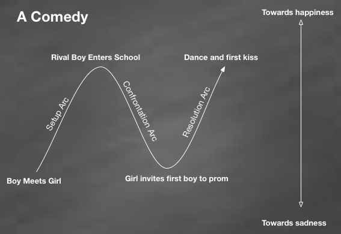
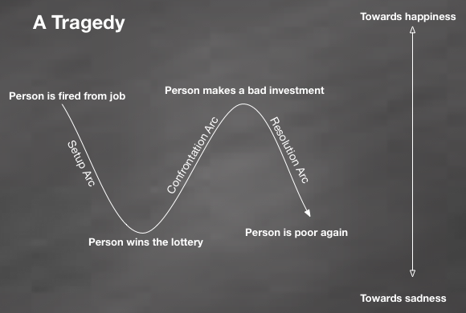
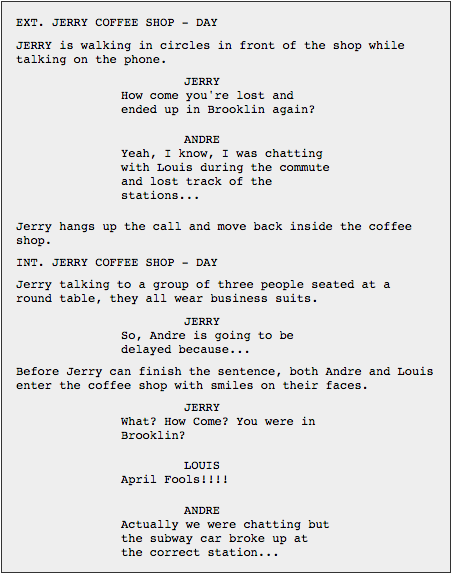

VideoLogger Curriculum | Narrative Structure and Scriptwriting
Made by Rio Mozilla Club
60 minutes
Learn how to tell a story using classical structures and movie scripts.
21st Century Skills
- Communication
- Creativity
Learning Objectives
- Understand the classical narrative structures employed by the movie industry.
- Learn how movie scripts are created.
- Create your own movie script scene.
Audience
- 13+
- Creative people with an interest in movies
Materials
- Internect-connected computers
- Markers
- Paper
- Flipchart or whiteboard
-
1. Preparation
Work through all the content from today's activity to get a feel for how each of its parts - the classical narrative structures and movie scripts - work together. Review this lesson plan, as well, to make sure you're comfortable facilitating it.
Be sure to test your technology and Internet connectivity if you're showing examples from the net.
Distribute markers, sticky notes and paper to all your learners so that they have tools to brainstorm the next exercises and activities.
Ice-breaker micro-activity
5 minutesAsk your learners: What movie/series/anime/cartoon have you seen recently had a really great story? and have them place their answer on sticky notes and fix them to the flipchart. After they all answer, do a little gallery walk with them through the available answers and let them +1 the items they also enjoyed. Get them talking why they liked each item.
This will allow you to learn what types of movies they like the most, you can then later frame all your examples from the same movies thus keeping them engaged.
-
2. Understanding Classical Narrative Structure
25 minutesWelcome your learners and explain that today we'll begin learning how to tell a story, the holywood way. In this first session we'll explore some classical narrative structures that date all the way back to the ancient greeks and maybe it is even older than that.
The way that theater, books, movies, cartoons, tells a story are all the same and date back to ancient times. The classical narrative structure is the key to create engaging storytelling experiences. After today's session, they will never look to a movie the same way again.
Our focus for this session is to understand how storytelling is organized and planned. We'll begin with a more general topic of understanding stories themselves and then focus on movie scripts.
The classical narrative form was first codified by Aristotles in its book called Poetics. It divides all narratives into two categories: comedies and tragedies.
There are two forms of narrative which can be used to categorize almost all stories we know. If you'd like a book about the topic, then screenplay by Syd Field is a very good one.
Explanation to learners
Explain the difference between tragedies and comedies to your learners by using examples from the micro-ativity used as the icebreaker. Divide your flipchart into two regions, one for comedy and another for tragedy, and start moving their sticky notes to one region or the other as you explain the nature of these two forms.
Explaining the three-arc structure
The wikipedia page about the three-arc structure is a good resource to know more about it. This structure is the format we all grown used to and is how we normally experience all the stories told us. From books, theater, movies and campfires, the three-arc structure has been with us since the ancient times.
These three arcs are usually called: setup, confrontation and resolution. Between each of these arcs there is a turning-point, which is an event or collection of events that moves the story in a complete new direction. So a three-arc story has two main turning points between the arcs.
Example
- Setup arc: a romantic story, boy meets girl, he falls in love and they are getting to know each other.
- Turning point #1: A rival boy transfer to their school, this new kid is pretty, smart and confident. The girl starts falling for him.
- Confrontation arc: Both boys start disputing the girl attention. They try to excel in sports, school and all the other things. The first boy is very clumsy and his attempts to surpass his rival usually backfire.
- Turning point #2: Even though the boy is clumsy and everything he tries ends up backfiring while the other boy excels in everything and is the most popular kid in school, the girl ends up inviting the first boy to the prom, she likes clumsy people.
- Resolution arc: they go to the party together. They dance, or at least she dances and he tries not to step on her feet. They have a great time and their first kiss. The End.
Story arcs are easier to visualize when seen graphically as shown below:
Explaining comedies
Comedy is the most common form used today. Comedies doesn't need to be fun, they only need to have a happy ending. All stories with happy endings are comedies.
Comedies follow the same arc structure as the image seen above. They begin with a setup arc that sets the character towards the path of success or happiness then a turning point pull the rug from under their feet and the story arc starts moving the narrative towards failure or sadness but before the story is over, a new turning point makes a sharp turn of narrative into the path of success again and then everyone is happy by the end of the movie.
Use examples from the sticky notes that you're familiar with the plot. Describe the story arcs and turning points using movies they know
Explaining tragedies
Tragedies are the opposite of the situation seen above. They start with the characters on the path to sadness but a turning point happens which sets the story in a new direction of hope and happiness but that will not last because before the end a new turning point will drive the story into its unhappy ending.
Many of the cautionary tales from our folk lore are tragedies meant to teach kids to behave and follow this exact structure which can be visualized as a graphic as well:
Micro-activity with learners
Give them more examples of how their favorite stories fall into one category or the other and find out their turning points. With their mood up with creativity, do:
- Distribute blank papers to all learners.
- Have them draw both a commedy curve and a tragedy curve.
- Let them think of both an original comedy and a tragedy and then fill the starting point, turning points and ending for their story similar to the images above.
- Let them walk around and present (verbally) their scene in terms of their chosen turning points, setup and ending to each other in a lose informal way.
After this little exercise, tell them that stories tend to have mini turning points and other gimicks to keep the pace moving towards the main turning points. If your learners are familiar with "House M.D." or similar hospital series, tell them that before the pacient is healed, there are many turning points as medicine and treatments are tried and failed.

-
3. Discovering Movie Scripts
10 minutesNow that we know about the structure of a story it is time for us to learn how to write it in the format used by the movie industry. Scriptwriting is fun and easy but it is not literature, it is not the end product of movie making but a fundamental step towards the planning and execution of your movie project.
There are many different templates and formats for scriptwriting. The one we'll use here is quite simple and will serve for the purposes of this curriculum. More complex formats, fine-tunned to your final objective might be available and we invite you all to search about the different formats at your own time.
An extensive guide about scriptwriting is available at this address but this is way beyond what we need. A simple template explanation such as this one will explain most of the elements in a movie script.
Explanation to learners
Tell them what are the different elements of the script.
- Scene header: is used to tell if the scene is an internal/indoor scene or an external one. It also contains the location and if it is day or night (or event afternoon)
- Action/Description: describes what is happening on the scene in the order that it happens.
- Dialogue: Always centered on the script, it covers the exchange between characters.
Micro-activity with learners
Tell learners to open this script sample built using Thimble and then do the following:
- Explain how the different classes are used to flag different script elements in the list.
- Let each of them remix that script by changing the action or dialogue.
After this quick exercise, we'll move to our large project of the day!
-
4. Telling a Story
20 minutesNow that you and your leaners know all about narrative structures and script formats, it is time to move to our larger project for the day which is the construction of a part of a movie script.
- Have each learner open the Movie Script Sample and click REMIX.
- Let each learner create two original scenes using that template.
- As they finish with their scenes, let them publish their initial script and invite them to walk around checking each others creations. Have them talk about their story and if it fits in the comedy or tragedy category
-
5. Reflection and Assessment
5 minutesFinally, facilitate a brief, reflective discussion about the day's learning using prompts like these - or make your own!
- In your own words, can you describe the characteristics of comedies and tragedies?
- As a videologger how could you use what you learned today to make your channel more interesting?
- How would a script for the topic that you want to talk about look like?
- Can you name some movie/series/cartoon you watched recently that had a great story?
- Was it difficult to create your script?
- Now that you know how stories are structured, how does this affect your movie watching experience?
- How would you improve this lesson?
You can record learners' responses for the purpose of assessment, as well, but be sure to do so in a way that doesn't disadvantage those who struggle with composing in any particular medium. For example, be ready to record spoken answers, as well as to read typed or written responses.
Next --> Let's remix some movies!